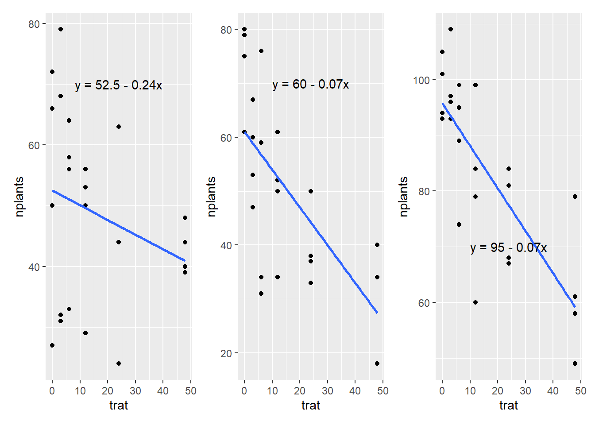

Dados quantitativos e o uso de análise de regressão
Quando se tem dados quantitativos, a análise de regressão é geralmente mais apropriada do que a análise de variância (ANOVA), pois a análise de regressão permite estudar a relação entre uma variável dependente (Y) e uma ou mais variáveis independentes (X).
library(tidyverse)
Warning: package 'ggplot2' was built under R version 4.2.3
── Attaching core tidyverse packages ──────────────────────── tidyverse 2.0.0 ──
✔ dplyr 1.1.0 ✔ readr 2.1.4
✔ forcats 1.0.0 ✔ stringr 1.5.0
✔ ggplot2 3.4.2 ✔ tibble 3.1.8
✔ lubridate 1.9.2 ✔ tidyr 1.3.0
✔ purrr 1.0.1
── Conflicts ────────────────────────────────────────── tidyverse_conflicts() ──
✖ dplyr::filter() masks stats::filter()
✖ dplyr::lag() masks stats::lag()
ℹ Use the conflicted package (<http://conflicted.r-lib.org/>) to force all conflicts to become errors
library(readxl)library(ggplot2)
Regressão linear simples
Na regressão linear simples, testamos a hipótese de que a reta de regressão (linha de melhor ajuste), que representa a relação entre as variáveis independentes e a variável dependente, tem um coeficiente de inclinação diferente de zero. Ou seja, testamos a hipótese de que a inclinação da reta de regressão é significativamente diferente de zero (testa se o p valor é diferente de 0).
Conjunto de dados estande (dados-diversos): Visualização em ggplot Para ajustar para uma regressão linear usa-se o argumento method = “lm” dentro da função geom_smooth.
Posteriomente, deve-se testar o modelo que melhor se ajusta aos dados.Pode-se testar fazer a análise de regressão para cada experimento (isola cada experimento) ou analisar em grupos (modelos mistos).
Analisando cada experimento isoladamente:
Para isso, cria um novo objeto para os dados (exp1) e atribui estande a ele, depois deve-se filtrar o experimento que deseja e criar um objeto para esse conjunto para viabilizar a realização da análise de regressão.
Exp 1:
exp1 <- estande |>filter(exp ==1)m1 <-lm(nplants ~trat, data = exp1)summary(m1)
Call:
lm(formula = nplants ~ trat, data = exp1)
Residuals:
Min 1Q Median 3Q Max
-25.500 -6.532 1.758 8.573 27.226
Coefficients:
Estimate Std. Error t value Pr(>|t|)
(Intercept) 52.5000 4.2044 12.487 1.84e-11 ***
trat -0.2419 0.1859 -1.301 0.207
---
Signif. codes: 0 '***' 0.001 '**' 0.01 '*' 0.05 '.' 0.1 ' ' 1
Residual standard error: 15 on 22 degrees of freedom
Multiple R-squared: 0.07148, Adjusted R-squared: 0.02928
F-statistic: 1.694 on 1 and 22 DF, p-value: 0.2066
O valor do intercept e o valor de trat (slope) são utilizados na tabela. Intercept é o valor da variável dependente quando a variável independente é igual a zero. Já o slope é a medida da inclinação da linha de regressão, que representa a mudança na variável dependente associada a uma mudança na variável independente.
Para o experimento 2:
exp2 <- estande |>filter(exp ==2)m2 <-lm(nplants ~trat, data = exp2)summary(m2)
Call:
lm(formula = nplants ~ trat, data = exp2)
Residuals:
Min 1Q Median 3Q Max
-25.7816 -7.7150 0.5653 8.1929 19.2184
Coefficients:
Estimate Std. Error t value Pr(>|t|)
(Intercept) 60.9857 3.6304 16.798 4.93e-14 ***
trat -0.7007 0.1605 -4.365 0.000247 ***
---
Signif. codes: 0 '***' 0.001 '**' 0.01 '*' 0.05 '.' 0.1 ' ' 1
Residual standard error: 12.95 on 22 degrees of freedom
Multiple R-squared: 0.4641, Adjusted R-squared: 0.4398
F-statistic: 19.05 on 1 and 22 DF, p-value: 0.0002473
Para o exp3:
exp3 <- estande |>filter(exp ==3)m3 <-lm(nplants ~trat, data = exp3)summary(m3)
Call:
lm(formula = nplants ~ trat, data = exp3)
Residuals:
Min 1Q Median 3Q Max
-26.5887 -3.9597 0.7177 5.5806 19.8952
Coefficients:
Estimate Std. Error t value Pr(>|t|)
(Intercept) 95.7500 2.9529 32.425 < 2e-16 ***
trat -0.7634 0.1306 -5.847 6.97e-06 ***
---
Signif. codes: 0 '***' 0.001 '**' 0.01 '*' 0.05 '.' 0.1 ' ' 1
Residual standard error: 10.53 on 22 degrees of freedom
Multiple R-squared: 0.6085, Adjusted R-squared: 0.5907
F-statistic: 34.19 on 1 and 22 DF, p-value: 6.968e-06
library(report)
Warning: package 'report' was built under R version 4.2.3
report(m3)
We fitted a linear model (estimated using OLS) to predict nplants with trat
(formula: nplants ~ trat). The model explains a statistically significant and
substantial proportion of variance (R2 = 0.61, F(1, 22) = 34.19, p < .001, adj.
R2 = 0.59). The model's intercept, corresponding to trat = 0, is at 95.75 (95%
CI [89.63, 101.87], t(22) = 32.43, p < .001). Within this model:
- The effect of trat is statistically significant and negative (beta = -0.76,
95% CI [-1.03, -0.49], t(22) = -5.85, p < .001; Std. beta = -0.78, 95% CI
[-1.06, -0.50])
Standardized parameters were obtained by fitting the model on a standardized
version of the dataset. 95% Confidence Intervals (CIs) and p-values were
computed using a Wald t-distribution approximation.
Gráfico para representar a regressão - Para unir os 3 graficos, usa o patchwork.
g1 <- exp1 |>ggplot(aes(trat, nplants))+geom_point()+geom_smooth(method ="lm", se = F)+annotate(geom ="text", x =24,y =70, label ="y = 52.5 - 0.24x")g2 <- exp2 |>ggplot(aes(trat, nplants))+geom_point()+geom_smooth(method ="lm", se = F)+annotate(geom ="text", x =24,y =70, label ="y = 60 - 0.07x")g3 <- exp3 |>ggplot(aes(trat, nplants))+geom_point()+geom_smooth(method ="lm", se = F)+annotate(geom ="text", x =24,y =70, label ="y = 95 - 0.07x")library(patchwork)
Warning: package 'patchwork' was built under R version 4.2.3
g1|g2|g3
`geom_smooth()` using formula = 'y ~ x'
`geom_smooth()` using formula = 'y ~ x'
`geom_smooth()` using formula = 'y ~ x'

Modelo misto
Em um modelo misto, as observações são divididas em grupos ou subgrupos. Cada grupo pode ter um conjunto diferente de efeitos aleatórios e/ou fixos, dependendo da estrutura dos dados. Por exemplo, se os dados foram coletados em diferentes locais geográficos, podemos ter um efeito aleatório para cada local (como no caso do conjunto de dados estande).
Equação: b1 - b2x - cx2
library(lme4)
Warning: package 'lme4' was built under R version 4.2.3
Carregando pacotes exigidos: Matrix
Attaching package: 'Matrix'
The following objects are masked from 'package:tidyr':
expand, pack, unpack
Warning in checkConv(attr(opt, "derivs"), opt$par, ctrl = control$checkConv, :
Model failed to converge with max|grad| = 0.00274249 (tol = 0.002, component 1)
summary(mix)
Linear mixed model fit by REML ['lmerMod']
Formula: nplants ~ trat + (trat | exp)
Data: estande
REML criterion at convergence: 580.8
Scaled residuals:
Min 1Q Median 3Q Max
-2.0988 -0.6091 0.1722 0.6360 1.9963
Random effects:
Groups Name Variance Std.Dev. Corr
exp (Intercept) 510.68405 22.5983
trat 0.05516 0.2349 -0.82
Residual 167.91303 12.9581
Number of obs: 72, groups: exp, 3
Fixed effects:
Estimate Std. Error t value
(Intercept) 69.7452 13.2146 5.278
trat -0.5687 0.1643 -3.462
Correlation of Fixed Effects:
(Intr)
trat -0.731
optimizer (nloptwrap) convergence code: 0 (OK)
Model failed to converge with max|grad| = 0.00274249 (tol = 0.002, component 1)
library(car)
Warning: package 'car' was built under R version 4.2.3
Carregando pacotes exigidos: carData
Warning: package 'carData' was built under R version 4.2.3
Attaching package: 'car'
The following object is masked from 'package:dplyr':
recode
The following object is masked from 'package:purrr':
some
Em geral, os modelos mistos são mais poderosos do que os modelos que tratam cada experimento isoladamente, pois levam em conta a variação tanto entre quanto dentro dos experimentos. Além disso, os modelos mistos permitem que os dados sejam analisados em sua totalidade, sem perder informações importantes sobre a estrutura dos dados.
Modelo GLM
O modelo linear generalizado é uma alternativa ao modelo linear. O GLM é considerado uma extensão do modelo linear que permite acomodar uma variedade de tipos de variáveis resposta, incluindo variáveis categóricas e contínuas. Além disso, o modelo linear generalizado permite que a relação entre a variável resposta e as variáveis explicativas seja não-linear. Ou seja, ele não se limita à suposição de que a relação é uma linha reta.
lm1 <-lm(nplants ~ trat, data = exp3)summary(lm1)
Call:
lm(formula = nplants ~ trat, data = exp3)
Residuals:
Min 1Q Median 3Q Max
-26.5887 -3.9597 0.7177 5.5806 19.8952
Coefficients:
Estimate Std. Error t value Pr(>|t|)
(Intercept) 95.7500 2.9529 32.425 < 2e-16 ***
trat -0.7634 0.1306 -5.847 6.97e-06 ***
---
Signif. codes: 0 '***' 0.001 '**' 0.01 '*' 0.05 '.' 0.1 ' ' 1
Residual standard error: 10.53 on 22 degrees of freedom
Multiple R-squared: 0.6085, Adjusted R-squared: 0.5907
F-statistic: 34.19 on 1 and 22 DF, p-value: 6.968e-06
glm1 <-glm(nplants ~ trat, family ="gaussian",data = exp3)glm2 <-glm(nplants ~ trat, family =poisson(link ="log"),data = exp3)AIC(glm1)
[1] 185.0449
AIC(glm2)
[1] 183.9324
summary(glm1)
Call:
glm(formula = nplants ~ trat, family = "gaussian", data = exp3)
Deviance Residuals:
Min 1Q Median 3Q Max
-26.5887 -3.9597 0.7177 5.5806 19.8952
Coefficients:
Estimate Std. Error t value Pr(>|t|)
(Intercept) 95.7500 2.9529 32.425 < 2e-16 ***
trat -0.7634 0.1306 -5.847 6.97e-06 ***
---
Signif. codes: 0 '***' 0.001 '**' 0.01 '*' 0.05 '.' 0.1 ' ' 1
(Dispersion parameter for gaussian family taken to be 110.9787)
Null deviance: 6235.8 on 23 degrees of freedom
Residual deviance: 2441.5 on 22 degrees of freedom
AIC: 185.04
Number of Fisher Scoring iterations: 2
summary(glm2)
Call:
glm(formula = nplants ~ trat, family = poisson(link = "log"),
data = exp3)
Deviance Residuals:
Min 1Q Median 3Q Max
-2.94600 -0.46988 0.02453 0.61868 2.34657
Coefficients:
Estimate Std. Error z value Pr(>|z|)
(Intercept) 4.571590 0.029539 154.762 < 2e-16 ***
trat -0.009965 0.001488 -6.697 2.13e-11 ***
---
Signif. codes: 0 '***' 0.001 '**' 0.01 '*' 0.05 '.' 0.1 ' ' 1
(Dispersion parameter for poisson family taken to be 1)
Null deviance: 77.906 on 23 degrees of freedom
Residual deviance: 29.952 on 22 degrees of freedom
AIC: 183.93
Number of Fisher Scoring iterations: 4
O modelo linear generalizado com distribuição gaussiana (family = gaussian) é usado quando a variável resposta é contínua e tem uma distribuição normal, ou seja, o mesmo que “lm”. Já o modelo linear generalizado com distribuição de Poisson é usado quando a variável resposta é um número inteiro e não negativo e segue uma distribuição de Poisson (family = poisson). O AIC (Akaike’s Information Criterion) é um critério de seleção de modelo usado para escolher o melhor modelo entre vários modelos candidatos. A escolha do modelo com o menor AIC é importante porque ele é uma medida de qualidade do modelo que leva em consideração tanto o ajuste aos dados quanto a complexidade do modelo. Como o AIC de menor valor é melhor, a família poisson é o ideal para os dados analisados.